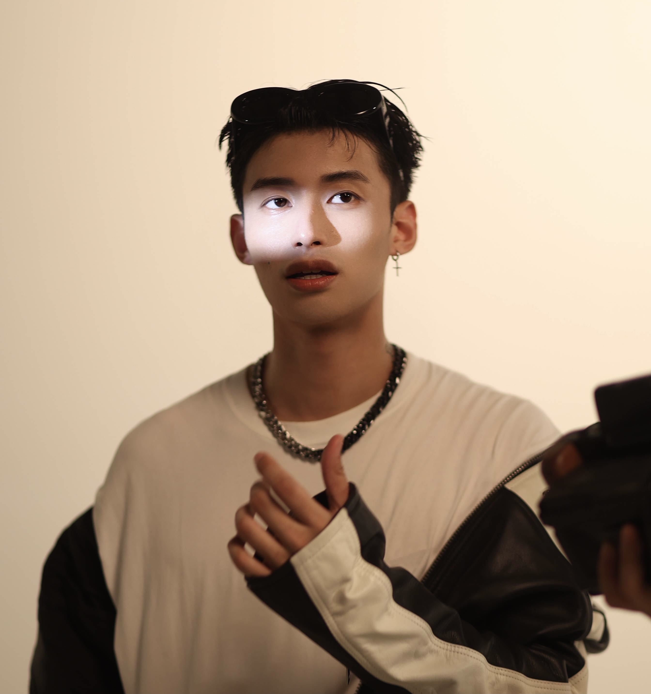

Benzo's Introduction

Li Daben, formerly known as Li Yuheng, was born in Jingzhou City, Hubei Province on April 16, 1995. Male hip hop rapper in mainland China, graduated from China Academy of fine arts.
In 2017, he participated in the competition of iqiyi music talent show "hip hop in China", and won the top 3 of Pan Weibo group and the top 9 in China; In August, he launched his personal single Bibble fashion Bible; In October 2020, he participated in the youth rap music program "China's new rap 2020" and won the third place of the year. On January 22, 2021, the studio album bedroom revenge was released.